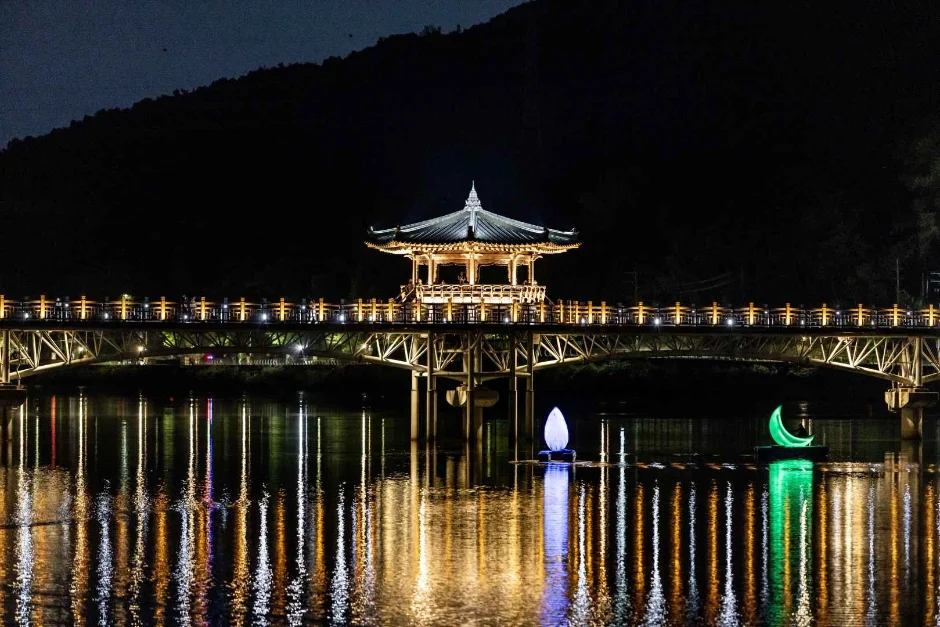
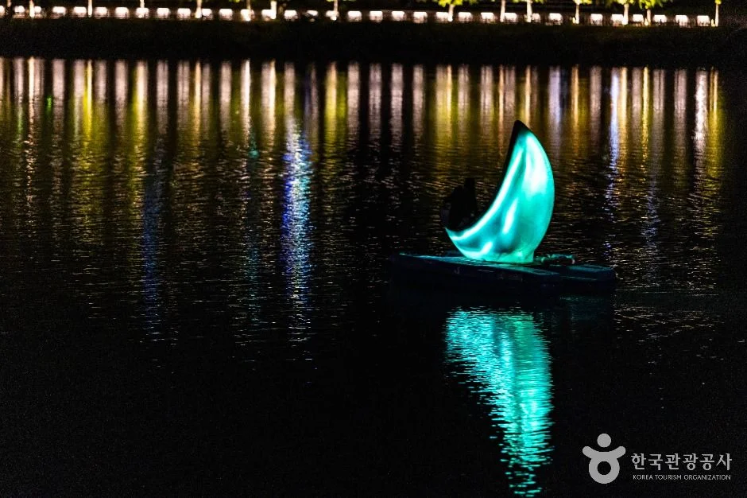
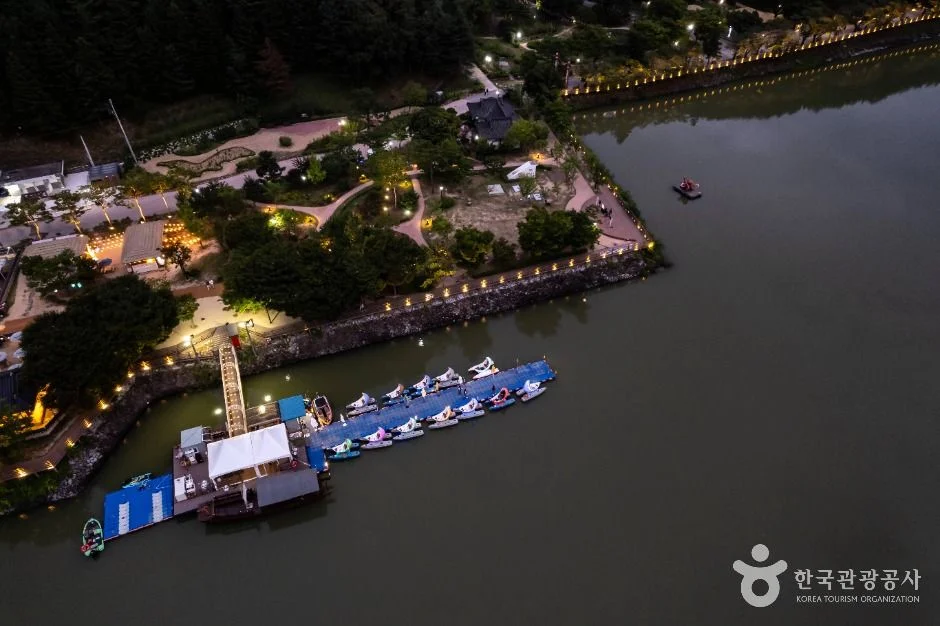
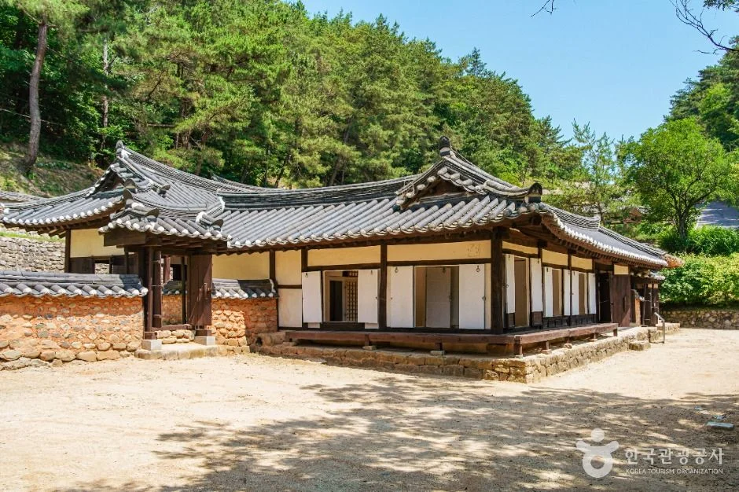
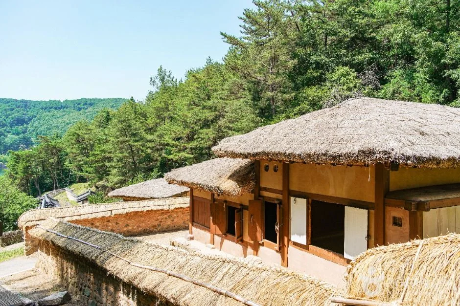
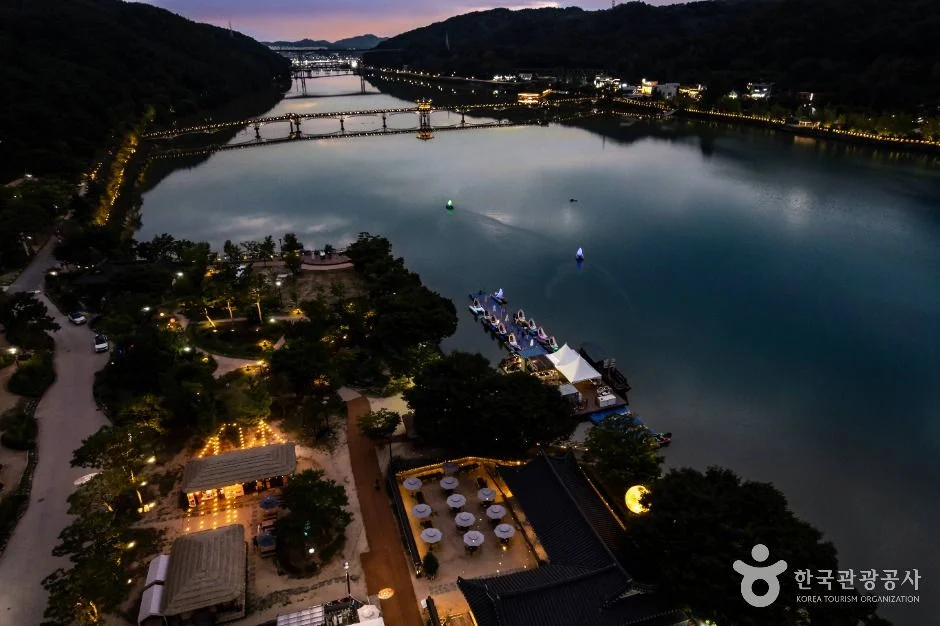
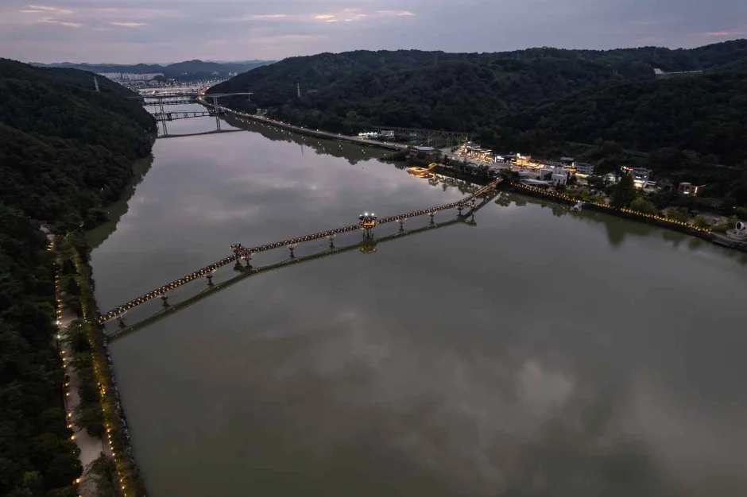
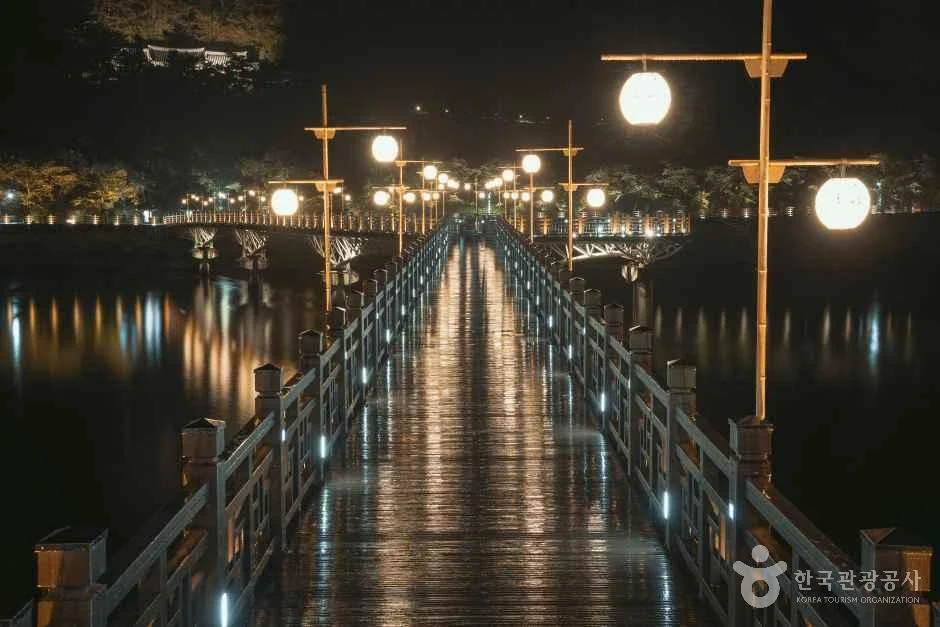
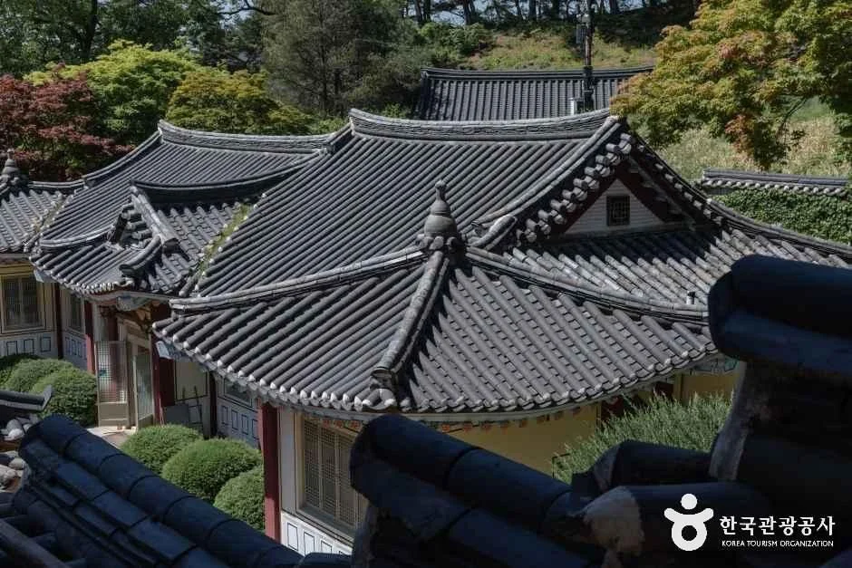
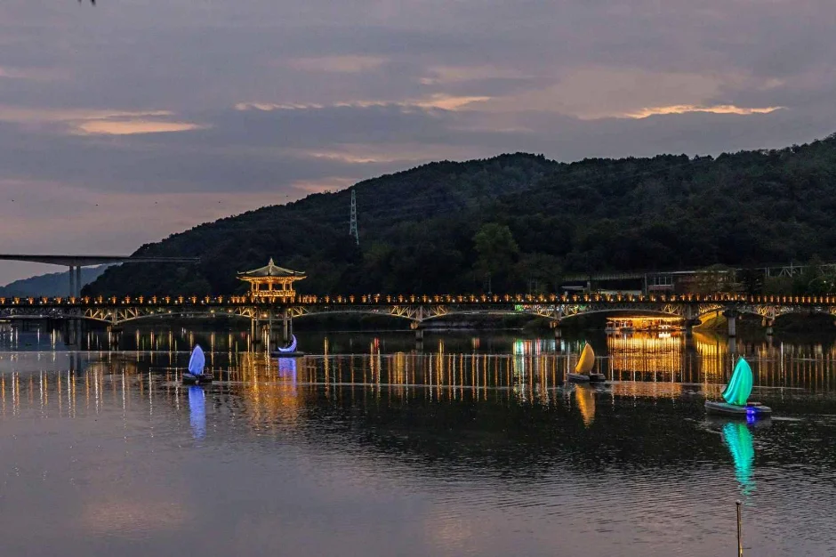

▲ 야간 조명이 켜진 월영교와 중앙의 월영정. 상시 풍경 사진이다. 사진=한국관광공사
"월영교 분수는 몇 시에 나올까?" 안동 월영교를 검색하면 분수 시간표가 자료마다 다르다. 어떤 곳은 주말 12시·14시·18시·20시에 10분씩이라고 하고, 한국관광공사 여행기사는 12시 30분·18시 30분·20시 30분에 20분씩이라고 한다. 이 글은 안동시 관광 누리집과 한국관광공사 TourAPI로 확인된 것(다리 길이 387m·폭 3.6m, 상시 개방, 월영교 공영주차장, 이응태 부부 이야기)과 확인하지 못한 것(분수 시간표·동절기 운영·조명 시간·주차 요금)을 나눠 정리한다. 안동 도심에서 월영교를 보고 안동민속촌·개목나루·월영가람길까지 자차로 묶는 방법, 도산서원으로 이어가는 코스도 다룬다.
💡 먼저 결론
월영교는 24시간 상시 개방, 연중무휴, 주차 가능(한국관광공사 TourAPI)이라 출발 시각 걱정은 덜 수 있다. 다만 분수는 시간표가 두 갈래로 갈려 있어 안동시 관광안내(054-840-3431)나 월영교 관광안내소(054-857-9783)에 전화로 확인하고 가는 편이 안전하다. 안동시 관광 누리집에서 월영교 안내를 확인할 수 있다. 안동관광 월영교 바로가기
1. 한눈에 보기 — 월영교는 어떤 다리인가
월영교는 안동시 상아동과 성곡동을 잇는 목재 보행교다. 안동시 관광 누리집의 현황표에는 길이 387m, 폭 3.6m, 교대 2개소·교각 15개소, 상부는 아치트러스교에 목재 바닥과 목재 난간, 부대시설로 팔각정·점핑날개곡사분수·조명시설이 적혀 있다. 한국관광공사 여행기사도 387m·3.6m로 같다. 개통은 2003년으로 한국관광공사 기사와 지역 보도가 일치한다.
| 항목 | 내용 | 확인 상태 |
|---|---|---|
| 위치 | 경북 안동시 상아동 569(상아동·성곡동 일원, 헬기장과 석빙고 사이) | 한국관광공사 TourAPI·안동시 관광 누리집 일치 |
| 규모 | 길이 387m, 폭 3.6m, 교각 15개소 | 안동시 관광 누리집(공식) |
| 구조 | 아치트러스교, 목재 바닥·난간, 중앙에 팔각정(월영정) | 안동시 관광 누리집(공식) |
| 개통 | 2003년 | 한국관광공사 여행기사·매일신문 보도 |
| 개방 시간 | 상시 개방, 연중무휴 | 한국관광공사 TourAPI |
| 관리 | 안동시립민속박물관 054-821-0649 | 안동시 관광 누리집(공식) |
| "국내 최장 목조교" | 흔히 쓰이는 표현 | 안동시·한국관광공사 자료에서 직접 확인하지 못했다 |
▲ 야간 조명이 켜진 월영교와 중앙의 월영정. 상시 풍경 사진이며 가을 촬영본은 아니다. 사진=한국관광공사
2. 원이엄마 편지 — 다리에 담긴 이야기
안동시 관광 누리집은 다리 이름을 시민 의견을 모아 정했다고 설명한다. 댐 건설로 수몰된 월영대가 이곳과 인연이 있고, 월곡면과 음달골이라는 지명을 참고했다는 것이다. 이어 "이 지역에 살았던 이응태 부부의 아름답고 숭고한 사랑을 오래도록 기념하고자" 했고, 먼저 간 남편을 위해 아내가 머리카락으로 만든 한 켤레 미투리 모양을 다리 모습에 담았다고 적었다.
그 바탕이 된 이야기가 흔히 '원이엄마 편지'로 불린다. 서울신문(2013년)과 지역 언론 보도에 따르면 1998년 안동 정상동에서 고성 이씨 이응태(1556~1586)의 무덤을 옮기던 중 관 속에서 아내가 남편에게 쓴 편지와 아내의 머리카락·삼 줄기로 삼은 것으로 보이는 미투리가 나왔다. 편지에 아들을 '원이'라고 부른 대목이 있어 원이엄마 편지라는 이름이 붙었다.
| 내용 | 근거 | 비고 |
|---|---|---|
| 다리가 이응태 부부의 사랑을 기념해 미투리 모양을 담았다 | 안동시 관광 누리집, 한국관광공사 TourAPI 소개 | 공식 설명 |
| 1998년 이응태(1556~1586) 묘 이장 중 편지·미투리 출토 | 서울신문 2013년 보도, 지역 언론 보도 | 언론 보도. 출토 유물의 소장처는 확인하지 못했다 |
| 원이엄마 동상·편지글 비석(건립 시기 2005년설) | 지역 언론 보도(검색 요약으로만 확인, 원문 미확인) | 건립 연도·위치는 확인하지 못했다 |
| 2013년 원이엄마 테마파크 조성 계획(20억 원, 2,118㎡) | 서울신문 2013년 보도 | 당시 계획 보도다. 현재 운영 현황은 확인하지 못했다 |
▲ 월영교 위에서 월영정을 바라본 야경. 상시 풍경 사진이다. 사진=한국관광공사
3. 야간 조명·달빛분수 — 시간표가 갈리는 이유
이 글에서 가장 조심해야 할 부분이다. 안동시 관광 누리집 월영교 페이지의 부대시설에는 점핑날개곡사분수와 조명시설이 있다고만 나오고 운영 시각은 적혀 있지 않다. TourAPI에도 분수 정보는 없다. 그래서 언론·여행 사이트를 비교했다. 참고로 같은 안동의 '낙동강 음악분수'는 월영교 분수와 다른 시설(2022년 경북매일은 평일 20시·주말 14시·20시, 20분이라고 보도)이라 시각표를 섞어 보면 헷갈리기 쉽다.
| 출처 | 분수 | 조명 |
|---|---|---|
| 메트로신문 2023년 3월 28일 보도(안동시립박물관의 겨울 중지 분수 재가동 안내) | 4월 1일~10월 31일 매 주말 4차례(12·14·18·20시) 10분씩, 7~9월은 평일에도 가동 예정. 겨우내 동파·안전사고 예방을 위해 일시 중지 | 경관 조명 정비 언급, 시각 기재 없음 |
| 경북매일 2021년 3월 22일 보도 | 10월 31일까지 주말 하루 4차례(12·14·18·20시) 10분씩. 7~9월 평일에도 운영 계획 | 2023년 보도와 같은 시각표 |
| 매일신문 2024년 6월 보도 | "분수를 가동하는 4~10월"이라고만 적었고 시각표는 없다 | 시각 기재 없음 |
| 나무위키 | 4~10월 주말(7~9월 평일 추가) 12·14·18·20시 각 10분 | 일몰부터 밤 10시 |
| 한국관광공사 여행기사(2025년 1월 확인 표기) | 10월 말까지 주말 하루 3회, 12:30·18:30·20:30 각 20분. 겨울철 운영 여부는 적지 않았다. 문의처로 월영교(안동민속박물관) 054-821-0649와 안동축제관광재단 054-856-3013이 함께 실려 있다 | 붉은빛·보랏빛 조명(시각 없음) |
| 안동시 관광 누리집(공식) | 시각 기재 없음 | 시각 기재 없음 |
정리하면 "4월~10월 말, 주말 중심"이라는 큰 틀은 거의 모든 자료가 같지만 회차와 시각, 1회 길이(10분 또는 20분)가 다르다. 흥미로운 점은 4회·10분 시각표가 2021년과 2023년 보도에서 같고, 3회·20분 시각표는 2025년 1월 확인으로 표기된 한국관광공사 기사에만 나온다는 것이다. 그래서 "시각표가 해마다 바뀌었을 가능성"이 하나의 설명이 될 수 있지만, 이는 추정이다. 안동시가 올해(2026) 공식 시각표를 공개한 자료는 찾지 못했으므로 어느 쪽이 맞는지는 말할 수 없다. 오늘은 10월 7일이다. 2023년 보도는 분수를 "겨우내 일시적으로 중지"했다가 4월 1일에 재가동한다고 전했으므로 11월 이후에는 쉴 가능성이 크지만, 올해 동절기 중단 시점은 공식 자료에서 확인하지 못했다. 10월 안에 가려면 분수를 기대하는 주말(10월 10~11일, 17~18일, 24~25일, 31일)을 골라 출발 전에 전화 확인을 하자.
✅ 분수·야경 체크
· 안동 관광문의 054-840-3431, 월영교 관광안내소 054-857-9783, 관리처 안동시립민속박물관 054-821-0649
· 분수 시간표는 자료마다 다름 → 전화 확인 후 출발
· 11월 이후 분수·조명 운영 여부는 확인하지 못했다

▲ 밤의 월영교와 호수 위의 문보트. 상시 풍경 사진이다. 사진=한국관광공사
4. 문보트·개목나루 — 호수에서 보는 월영교
한국관광공사 TourAPI는 개목나루 문보트(안동시 민속촌길 26)를 월영교에 있는 선착장으로 소개한다. 달빛에 반짝이는 월영교 아래를 천천히 지나는 보트 체험이고, 문보트와 황포돛배가 있다. 문보트는 조이스틱으로 조작하고 블루투스 스피커·마이크 사용이 가능하다고 안내돼 있다.
| 항목 | 내용 | 확인 상태 |
|---|---|---|
| 운영 시간 | 월~목 09:00~22:00, 금~일 09:00~23:00, 휴게 12:00~13:00 | TourAPI. 시기에 따라 다르다고 표기 |
| 휴무 | 매주 월요일 | TourAPI에 월~목 운영 시간과 같이 적혀 있어 상충. 출발 전 확인 필요 |
| 문의 | 054-745-6200 | TourAPI |
| 요금 | 나무위키에 3인 기준 30분 28,000원으로 소개 | 단일 2차 출처, 공식 요금은 확인하지 못했다. 공식 홈페이지 koreaboat.co.kr |

▲ 밤 호수 위의 초승달 모양 문보트. 상시 풍경 사진이다. 사진=한국관광공사

▲ 개목나루 선착장 일대를 내려다본 항공 사진. 상시 풍경이다. 사진=한국관광공사
5. 안동민속촌·월영공원 — 걸어서 이어지는 곳
한국관광공사 TourAPI는 안동민속촌을 안동댐 조성 때 수몰 지역의 가옥 몇 채를 옮겨 만든 야외박물관 형태의 민속 경관지로 소개한다. 입구에 장승이 있고 이육사 시비(「광야」)가 이어지며, 안동 민속박물관·태조 왕건 촬영장 등이 주변에 있다고 한다. 이용 정보는 상시 개방·연중무휴·주차 가능, 문의는 경상북도 종합관광안내소 054-852-6800이다. 월영교 관광안내소는 안동시 민속촌길 13에 있다.
| 장소 | 내용 | 확인 상태 |
|---|---|---|
| 월영교 | 상시 개방, 연중무휴, 주차 가능 | TourAPI |
| 월영교 공영주차장 | 장애인 전용 6대, 남녀 구분 화장실 1개소, 촉각 모형·음성 관광안내판 | 안동시 관광 누리집(공식). 전체 주차 면수·요금은 확인하지 못했다 |
| 안동민속촌 | 상시 개방, 연중무휴, 주차 가능, 054-852-6800 | TourAPI |
| 월영교 관광안내소 | 안동시 민속촌길 13, 054-857-9783 | 안동시 관광 누리집(공식) |
| 개목나루 문보트 | 민속촌길 26 | TourAPI |
| 월영공원 | 2026 월영야행 때 '월영 달빛정원'이 열렸던 곳 | 경북매일 보도. 상시 시설 정보는 확인하지 못했다 |

▲ 안동민속촌의 기와집. 상시 풍경 사진이다. 사진=한국관광공사

▲ 안동민속촌의 초가. 상시 풍경 사진이다. 사진=한국관광공사
6. 월영가람길 — 올해 9월 새로 열린 동선
2026년 9월에 새로 정식 개장한 시설이 하나 있다. 옛 중앙선 폐선 부지를 활용한 월영가람길이다. 매일신문·경북매일은 9월 9일 오전 10시 정식 개장했고, 임청각에서 성락하늘철교를 지나 와룡빛터널까지 총 2.6km라고 전했다. 경북매일은 월영교·임청각 같은 기존 관광자원과 폐선 철길을 연결해 관광 동선이 넓어졌다고 보도했다. 7월 31일~8월 9일에는 임시 운영을 했다.
| 시설 | 운영·요금 | 비고 |
|---|---|---|
| 월영열차 | 전기 무궤도 열차, 10:00~18:00, 첫차 10시·막차 16:30, 왕복 3,000원 | 매일신문·경북매일(9월 3일자) 모두 첫차 10시~막차 16시 30분, 하루 10회 운행이라고 보도 |
| 와룡빛터널 | 길이 560m, 09:00~18:00(입장 마감 17:20), 초등 1,000원·중고 3,000원·성인 5,000원 | 옛 철도 터널에 조명·영상 콘텐츠. 경북매일 9월 13일자는 운영 시간을 10~18시로 적어 보도마다 개시 시각이 다르다 |
| 휴무 | 매주 월요일(공휴일이면 다음 첫 평일) | 월요일 휴무 때문에 평일 방문 시 주의 |
월영열차·와룡빛터널의 예매 방법과 전용 주차장은 확인하지 못했다. 임청각 관광안내소는 안동시 임청각길 63(054-854-9783)이다. 안동시 관광 누리집이 소개하는 '월영교(낭만) 코스'는 안동 임청각→월영교→개목나루→안동시립박물관→구름에 On Off→낙강물길공원 순이다.

▲ 월영교 일대 호반을 내려다본 항공 사진. 상시 풍경이다. 사진=한국관광공사

▲ 강 위로 길게 뻗은 월영교 전경. 상시 풍경이며 가을 촬영본은 아니다. 사진=한국관광공사
7. 자차 코스 — 주차와 이동 순서
안동시 관광 누리집은 자가용으로 안동역에서 월영교까지 4.5km, 약 10분(안동역→법흥지하도→보조댐→월영교)이라고 안내한다. 월영교 공영주차장이 있고 TourAPI도 월영교·안동민속촌 모두 주차 가능으로 적었지만, 주차 요금과 주말 만차 상황은 공식 자료에서 확인하지 못했다. 과거 보도에는 민속박물관 주차장에서 출발하는 행사 기간 무료 셔틀 이야기가 나오는데, 올해 운영 여부는 알 수 없다.
| 순서 | 장소 | 메모 |
|---|---|---|
| 1 | 월영교 공영주차장 주차 | 요금 미확인 |
| 2 | 안동민속촌·월영공원 산책 | 상시 개방 |
| 3 | 월영교 도보 왕복 387m | 분수 시각 전화 확인 |
| 4 | 개목나루 문보트(선택) | 월요일 휴무 여부 확인 |
| 5 | 월영가람길(임청각~와룡빛터널, 선택) | 월요일 휴무 |

▲ 가로등이 켜진 월영교 보행로. 상시 풍경이다. 사진=한국관광공사
8. 도산서원까지 — 요약만
도산서원은 이 기사의 주인공이 아니다. 같은 안동 자차 일정에 붙이기 좋은 곳이라 확인한 정보만 적는다. TourAPI 기준 이용 시간은 2월~10월 09:00~18:00(입장 마감 17:30), 11월~1월 09:00~17:00(마감 16:30), 연중무휴, 주차 가능, 문의 054-856-1073이다. TourAPI 좌표로 월영교와의 직선거리를 계산하면 약 18km인데, 이는 직선이고 실제 도로 거리·소요 시간은 확인하지 못했다. 요금도 확인하지 못했다. 공식 안내는 안동시 도산서원 페이지에서 볼 수 있다. 도산서원 바로가기
| 항목 | 내용 | 확인 상태 |
|---|---|---|
| 관람 시간 | 2~10월 09:00~18:00(입장 마감 17:30), 11~1월 09:00~17:00(마감 16:30) | TourAPI·안동시 공식 페이지 일치 |
| 휴무·주차 | 연중무휴, 주차 가능 | TourAPI |
| 월영교와의 거리 | 직선 약 18km | TourAPI 좌표로 직접 계산. 도로 거리·소요 시간은 미확인 |
| 입장료 | - | 안동시 페이지에 기재가 없어 확인하지 못했다 |

▲ 도산서원의 기와지붕. 상시 풍경 사진이다. 사진=한국관광공사
9. 안동 다른 곳과 묶을 때
월영교는 안동 도심 쪽이고 하회마을·병산서원은 방향이 다르다. 이미 정리한 안동 기사를 참고하자.
▲ 도산서원 경내. 상시 풍경 사진이다. 사진=한국관광공사

▲ 해질녘의 월영교. 상시 풍경이며 가을 촬영본은 아니다. 사진=한국관광공사
✅ 출발 전 체크리스트
· 월영교: 상시 개방, 연중무휴, 길이 387m·폭 3.6m
· 분수·조명 시간표는 자료마다 달라 054-840-3431 또는 054-857-9783 확인
· 11월 이후 분수 운영 여부는 확인하지 못했다
· 주차: 월영교 공영주차장·안동민속촌 주차 가능, 요금 미확인
· 월영열차·와룡빛터널은 월요일 휴무
· 도산서원: 2~10월 09:00~18:00, 11~1월 09:00~17:00
10. 정리
안동 월영교는 길이 387m·폭 3.6m의 목재 보행교로, 한국관광공사 TourAPI상 상시 개방·연중무휴·주차 가능이다. 다리는 이응태 부부의 사랑을 기려 아내의 미투리 모양을 담았다는 것이 안동시의 설명이다.
분수는 4월~10월 말 주말 중심이라는 큰 틀만 거의 일치하고 회차·시각·길이는 자료마다 다르며, 동절기 운영·주차 요금·가을 조명 시간은 확인하지 못했다. 올해 9월 열린 월영가람길(월영열차 왕복 3,000원, 와룡빛터널 성인 5,000원, 월요일 휴무)과 개목나루 문보트, 안동민속촌을 묶으면 반나절 코스가 된다. 출발 전 전화 확인을 권한다.